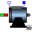

DCPM_QuasiStaticTest example: Compare DCPM motors transient - quasi-static |
|
Diagram
{kind=link}
Information
This information is part of the Modelica Standard Library maintained by the Modelica Association.
Test example: Compare DCPM motors transient and quasi-staticThe motors start at no-load speed, then load pulses are applied.
Simulate for 2 seconds and plot (versus time):
- dcpm1.ia: armature current of transient model
- dcpm1.wMechanical: motor's speed of transient model
- dcpm1.tauElectrical: motor's torque of transient model
- dcpm2.ia: armature current of quasi-static model
- dcpm2.wMechanical: motor's speed of quasi-static model
- dcpm2.tauElectrical: motor's torque of quasi-static model
Parameters (6)
| Va |
Value: 100 Type: Voltage (V) Description: Actual armature voltage |
|---|---|
| Ve |
Value: 100 Type: Voltage (V) Description: Actual excitation voltage |
| w0 |
Value: Modelica.Units.Conversions.from_rpm(1500) Type: AngularVelocity (rad/s) Description: No-load speed |
| TLoad |
Value: 63.66 Type: Torque (N·m) Description: Nominal load torque |
| JLoad |
Value: 0.15 Type: Inertia (kg·m²) Description: Load's moment of inertia |
| dcpmData |
Value: Type: DcPermanentMagnetData Description: DC machine data |
Components (10)
| dcpm1 |
Type: DC_PermanentMagnet |
|
|---|---|---|
| armatureVoltage |
Type: ConstantVoltage |
|
| groundArmature |
Type: Ground |
|
| loadInertia1 |
Type: Inertia |
|
| loadTorque1 |
Type: Torque |
|
| pulse |
Type: Pulse |
|
|  | dcpm2 |
Type: DC_PermanentMagnet |
| loadInertia2 |
Type: Inertia |
|
| loadTorque2 |
Type: Torque |
|
| dcpmData |
Type: DcPermanentMagnetData Description: DC machine data |